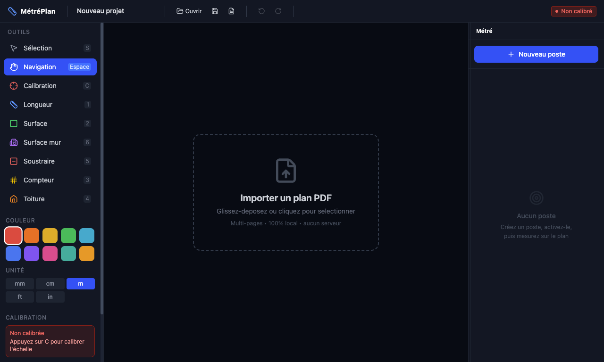
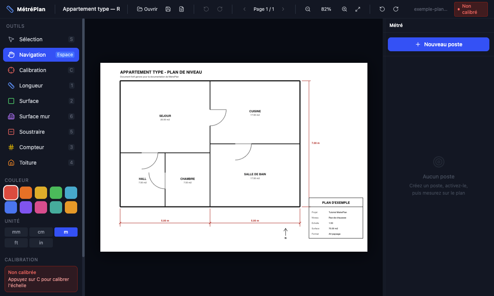
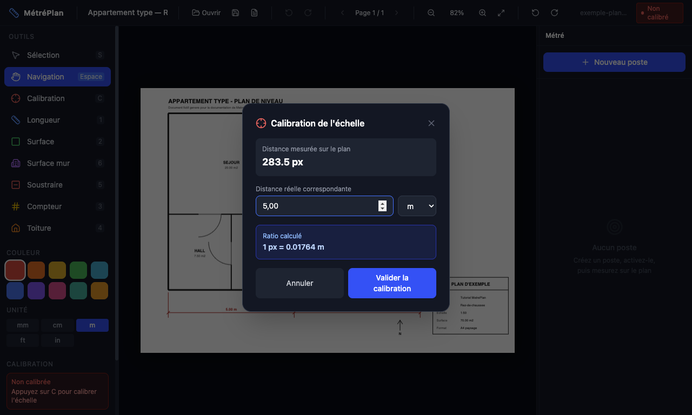
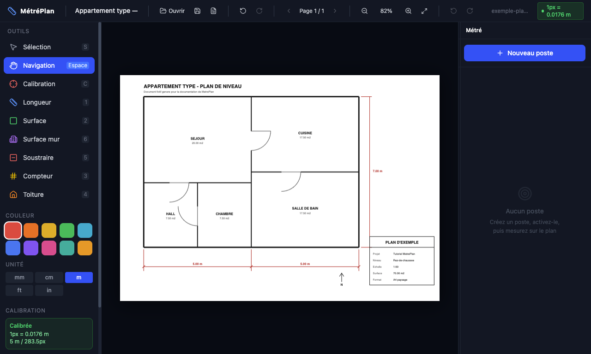
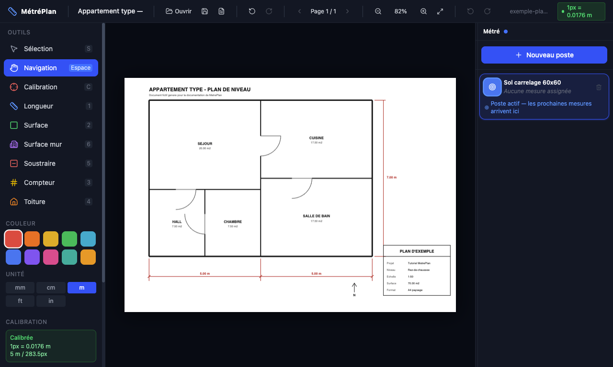
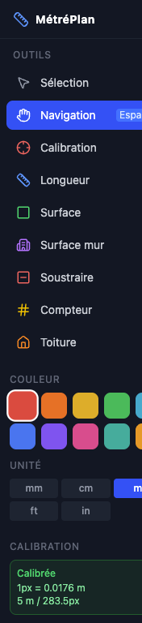
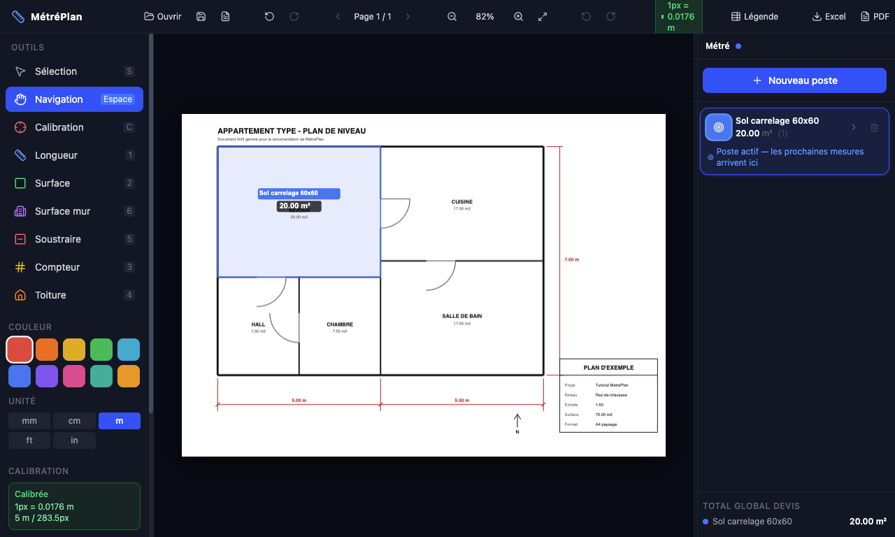
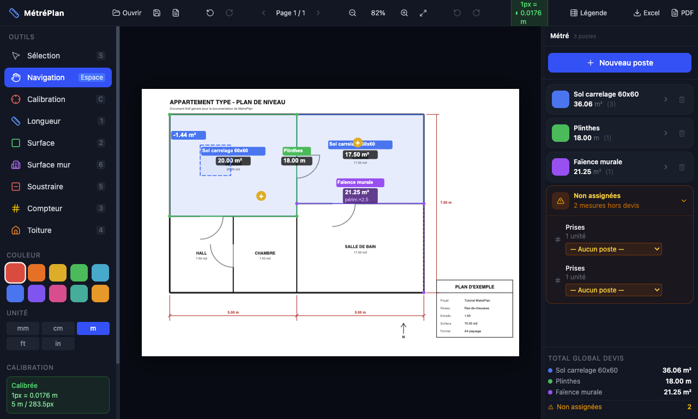
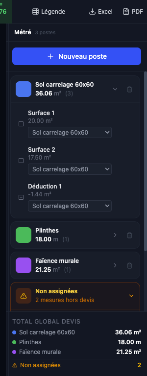
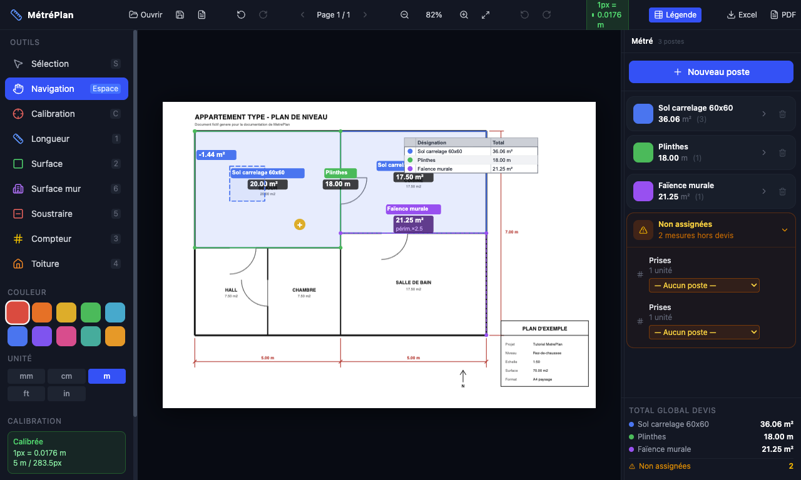

Sommaire
Ce tutoriel utilise un plan fictif livré avec l'application :
exemple-plan.pdf (un appartement de 70 m²). Vous le trouverez à la racine du
dossier de l'application, ou dans public/exemple-plan.pdf. Ouvrez-le et refaites
chaque étape : vous devez retrouver exactement les mêmes chiffres.
1Découvrir l'interface
L'écran se divise en trois zones, toujours les mêmes :

- À gauche — la boîte à outils. Les outils de mesure, la couleur et l'unité de travail.
- Au centre — le plan. C'est là que vous dessinez vos mesures.
- À droite — le métré. Vos postes, leurs totaux, et le récapitulatif du devis.
La barre du haut regroupe l'ouverture, l'enregistrement, la navigation entre les pages, le zoom, la rotation et les exports.
2Ouvrir un plan
Trois possibilités, au choix :
- Cliquer sur Ouvrir dans la barre du haut ;
- Cliquer sur la grande zone pointillée au centre ;
- Glisser-déposer le fichier PDF directement sur la fenêtre.

Pour naviguer : la molette zoome autour du curseur, et l'on se déplace en maintenant Espace (ou avec l'outil Navigation). Le bouton Ajuster recadre le plan entier.
Les deux boutons de rotation de la barre du haut font pivoter la page de 90°. Faites-le avant de calibrer : dès qu'une échelle ou une mesure existe, la rotation se verrouille pour ne pas fausser les mesures déjà prises.
3Calibrer l'échelle
Sans calibration, l'application ne connaît que des pixels : aucune mesure n'est possible. Et si la calibration est fausse, tout le métré est faux. Prenez trente secondes ici, elles évitent de tout recommencer.
Le principe : vous montrez à l'application une distance dont vous connaissez la valeur réelle.
- Activez l'outil Calibration (ou tapez C).
- Cliquez sur le premier point d'une cote connue du plan.
- Cliquez sur le second point. Une fenêtre s'ouvre.
- Saisissez la distance réelle, choisissez l'unité, validez.

La fenêtre affiche la distance mesurée à l'écran (ici 283,5 px), vous saisissez la distance réelle (5,00 m) et le ratio calculé s'affiche immédiatement.

Prenez la plus longue cote disponible : plus la référence est longue, plus l'erreur de clic devient négligeable. Calibrer sur 10 m est bien plus précis que sur 50 cm. Zoomez avant de cliquer, le réticule est précis au pixel.
4Créer les postes
Un poste est une ligne de votre devis : « Sol carrelage 60x60 », « Plinthes », « Faïence murale »… Toutes les mesures rattachées à un poste s'additionnent automatiquement.
- Cliquez sur + Nouveau poste dans le panneau de droite.
- Double-cliquez sur son nom pour le renommer.
- Cliquez sur sa pastille de couleur pour l'activer.

Une mesure prise sans poste actif n'est rattachée à rien. Elle reste visible dans le bloc orange « Non assignées », mais elle ne compte dans aucun total de devis. Rien n'est perdu : vous pourrez l'assigner après coup (voir l'étape 6).
5Mesurer
Le principe est le même pour tous les outils : on clique chaque point, puis on valide avec Entrée ou un double-clic. Échap annule le tracé en cours.

| Outil | Touche | Ce qu'il mesure | Exemple d'usage |
|---|---|---|---|
| Longueur | 1 | Un développé, en m | Plinthes, corniches, tranchées |
| Surface | 2 | Une aire fermée, en m² | Sols, plafonds, cloisons |
| Compteur | 3 | Un nombre d'objets | Prises, spots, radiateurs |
| Toiture | 4 | Une aire corrigée par la pente | Versants de toit |
| Soustraire | 5 | Une aire négative | Trémies, îlots, réservations |
| Surface mur | 6 | Périmètre × hauteur, en m² | Faïence, peinture, enduit |
Votre première surface
Outil Surface, puis un clic à chaque angle de la pièce et Entrée. La surface se remplit de la couleur du poste et son étiquette s'affiche.

Le métré prend forme
En continuant — la cuisine dans le même poste, une déduction pour la trémie, le périmètre en plinthes, la faïence de la salle de bain et deux prises comptées — on obtient un métré complet :

Sol carrelage : 20,00 + 17,50 − 1,44 = 36,06 m² — la déduction
est bien retranchée.
Plinthes : 5 + 4 + 5 + 4 = 18,00 m.
Faïence : (5,00 + 3,50) × 2,50 m de hauteur = 21,25 m².
L'outil Surface mur multiplie le développé tracé par la hauteur saisie dans la boîte à outils.
Réglez cette hauteur avant de tracer. L'étiquette rappelle le calcul
(périm.×2.5) pour que le contrôle reste possible d'un coup d'œil.
6Vérifier et corriger
Le panneau de droite n'est pas qu'un total : c'est votre outil de contrôle. Cliquez sur le chevron d'un poste pour dérouler le détail de ses mesures.

Sur chaque ligne de mesure vous disposez de :
- un menu déroulant qui indique — et permet de changer — son poste ;
- une icône œil pour la masquer sur le plan sans la supprimer ;
- une corbeille pour la supprimer définitivement.
Cliquer sur une mesure la sélectionne et vous amène sur sa page.
Rattraper une mesure oubliée ou mal rangée
Les mesures prises sans poste actif sont regroupées dans le bloc orange « Non assignées » — impossible de les oublier au moment de chiffrer.

Le menu déroulant couvre les trois situations :
| Situation | Ce que vous faites |
|---|---|
| Mesure sans poste | Choisir le poste voulu dans la liste |
| Mesure dans le mauvais poste | Choisir le bon poste — elle est déplacée |
| Mesure à sortir du devis | Choisir « — Aucun poste — » |
Gris = la mesure est rattachée à un poste. Orange = elle ne l'est pas. Un coup d'œil suffit pour repérer ce qui manque encore au devis.
7Ajuster les étiquettes
Sur un plan chargé, les étiquettes finissent par se chevaucher et masquer le dessin. Deux gestes suffisent :
- Déplacer — cliquez-glissez l'étiquette où vous voulez. Sa position est enregistrée avec le projet.
- Masquer — sélectionnez la mesure, puis cliquez le petit × rouge en haut de son étiquette. La mesure reste dans les totaux, seule l'étiquette disparaît du plan.
Étiquettes et points de tracé gardent la même taille à l'écran quel que soit le zoom. Vous pouvez zoomer fortement pour cliquer un angle au pixel près sans que les repères ne viennent recouvrir le plan.
8Poser la légende
Le bouton Légende de la barre du haut affiche sur le plan un tableau récapitulatif des postes et de leurs totaux. Il se déplace par glisser-déposer et suit le plan dans les exports.

9Enregistrer le projet
Le bouton disquette (ou Ctrl+S /
Cmd+S) enregistre un fichier .mplan.
Le .mplan contient le plan PDF lui-même, toutes vos mesures,
la calibration, les postes, les positions d'étiquettes et la légende. Vous pouvez l'archiver
ou l'envoyer à un collègue : à la réouverture, tout revient — sans avoir à retrouver
le PDF d'origine.
Pour rouvrir un projet, utilisez le bouton document situé juste à côté,
puis choisissez votre fichier .mplan.
Les .mplan enregistrés avec une version antérieure ne contiennent pas le plan
PDF. À leur ouverture, le métré est bien restauré, mais vous devrez rouvrir le PDF manuellement.
Réenregistrez-les ensuite : le plan y sera intégré.
10Exporter le métré
| Bouton | Résultat | Pour quoi faire |
|---|---|---|
| Excel | Classeur .xlsx | Chiffrer, appliquer vos prix unitaires |
| Rapport de métré | Joindre le détail des quantités au devis | |
| Plan | Plan annoté | Montrer au client ce qui a été mesuré |
Le bouton Plan n'apparaît que lorsqu'un PDF est ouvert ; les deux autres dès qu'une mesure existe.
11Raccourcis clavier
| Touche | Action |
|---|---|
| S | Outil Sélection |
| Espace (maintenu) | Se déplacer sur le plan |
| C | Calibration |
| 1 … 6 | Longueur, Surface, Compteur, Toiture, Soustraire, Surface mur |
| Entrée ou double-clic | Valider la mesure en cours |
| Échap | Annuler le tracé en cours |
| Suppr | Supprimer la mesure sélectionnée |
| Ctrl+Z / Ctrl+Y | Annuler / Refaire |
| Ctrl+O | Ouvrir un PDF |
| Ctrl+S | Enregistrer le projet |
Sur Mac, remplacez Ctrl par Cmd.
12Pièges fréquents
| Symptôme | Cause | Solution |
|---|---|---|
| « Calibrez d'abord l'échelle » | Aucune calibration sur ce projet | Tapez C et calibrez sur une cote connue |
| Une mesure n'apparaît dans aucun total | Elle a été prise sans poste actif | Bloc orange « Non assignées » → choisir un poste |
| Les boutons de rotation sont grisés | Le plan est calibré ou porte déjà des mesures | Normal : pivoter fausserait les mesures existantes |
| Le dernier point cliqué manque | Ancienne version de l'application | Mettre à jour : Entrée conserve désormais tous les points |
| Un total mélange des m et des m² | Deux types de mesures dans le même poste | Normal : les totaux sont affichés séparément par unité |
| Les étiquettes masquent le plan | Plusieurs mesures au même endroit | Déplacez-les par glisser-déposer, ou masquez-les avec le × |
Le bon réflexe, dans l'ordre
- Ouvrir le plan — et le pivoter si besoin, maintenant.
- Calibrer sur la plus longue cote disponible.
- Créer les postes du devis.
- Activer un poste, puis mesurer ce qui le concerne.
- Contrôler les totaux et le bloc « Non assignées ».
- Enregistrer le
.mplan, puis exporter.